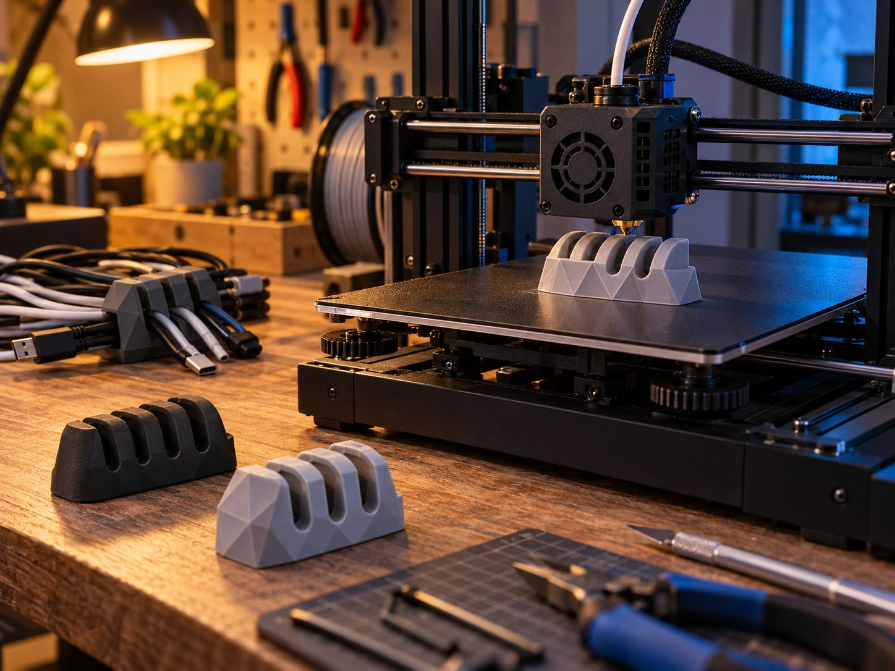
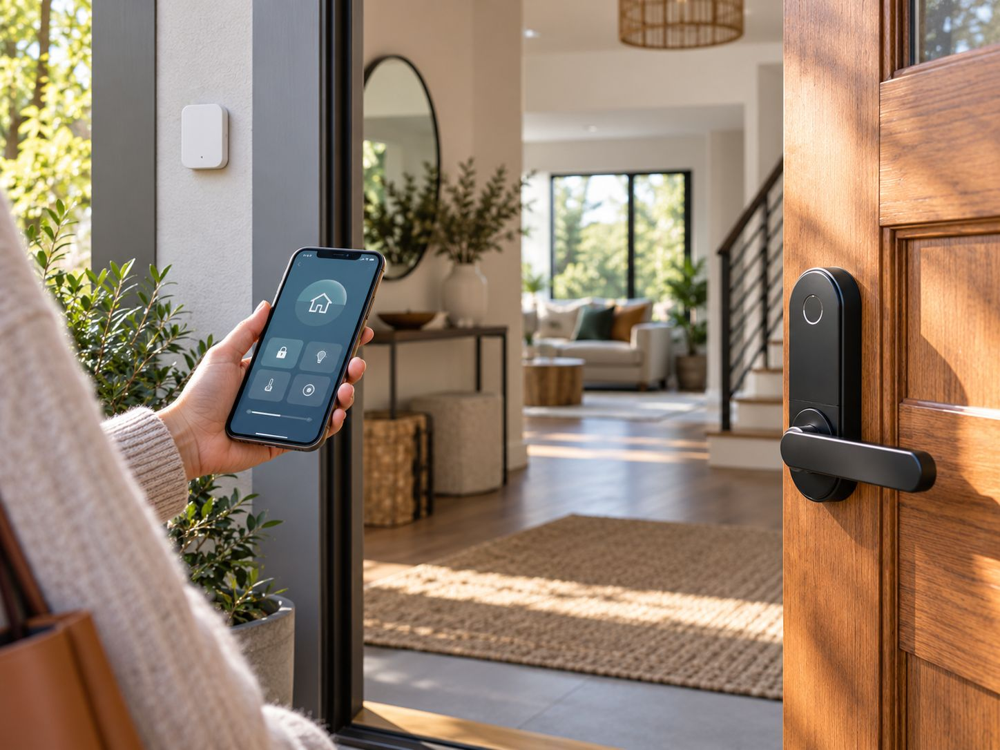

Things I build when nobody is paying me to.
A house that runs on Home Assistant, a workshop corner with two printers, and the experiments in between. Each project keeps a log, because the log is where the lessons are.

Smart home
Home Assistant, sensors, presence, and a network that keeps things apart.

Home Assistant
OngoingA house that quietly does the right thing
Started in 2022 with three Zigbee bulbs. Now runs lighting, climate, the robot vacuum and a morning routine for twins. The design principle: no automation should surprise a guest.
Home networking
DoneVLANs for a flat, not a data centre
Three networks, one for things that should never talk to the NAS.
Sensors
OngoingPresence without cameras
mmWave in the living room, door sensors elsewhere, and rules about what “home” means.
Device setup
DoneBackups that restore, tested quarterly
Home Assistant snapshots to the NAS, the NAS to cold storage, and a calendar reminder to prove it.
3D printing
Functional parts first. Ornaments only when the twins ask.
Woodwork and printing
BuiltA cabinet for two printers and the mess they make
Designed in CAD, cut from 18 mm birch ply, with an enclosed and filtered bay for the 3D printer, a shelf for the inkjet, and a spool drawer.
Functional objects
OngoingSmall fixes, printed: the household parts library
Cable clips, a sensor mount that matches the skirting, replacement knobs for a 1990s oven. Every file versioned, every failure logged.
Printer setup
DoneTuning a budget printer until it stops being budget
Firmware, input shaping, a hardened nozzle, and the calibration sequence I now run after every filament change.
Experiments
Weekend-sized questions. Most end in a blog post; some end in a drawer.
- Running local LLM evals on a home serverCan a small model classify my photo library by event? Mostly, and the failures were instructive.Written up
- A three-node Kubernetes cluster on mini PCsFor learning operations the hard way: power cuts, SD cards, and the day etcd filled a disk.Ongoing
- Reading a smart meter over infraredA sensor, a schematic I did not fully understand, and a working energy graph two weekends later.Done
My gear
What the projects above are built with. No affiliate links, just the list I wish I had found earlier. models are placeholders
Home server
- [Mini PC model], 32 GB RAM
- [NAS model], 4 bays, RAID 1 pairs
- Proxmox, Home Assistant OS as a VM
Network
- [Router model] with VLAN support
- 2 access points, wired backhaul
- Managed 8-port switch
Sensors and radios
- Zigbee coordinator (USB)
- mmWave presence sensor, living room
- Door, temperature and humidity sensors
Workshop
- [3D printer model], enclosed
- [Inkjet printer model]
- Track saw, router, pocket-hole jig